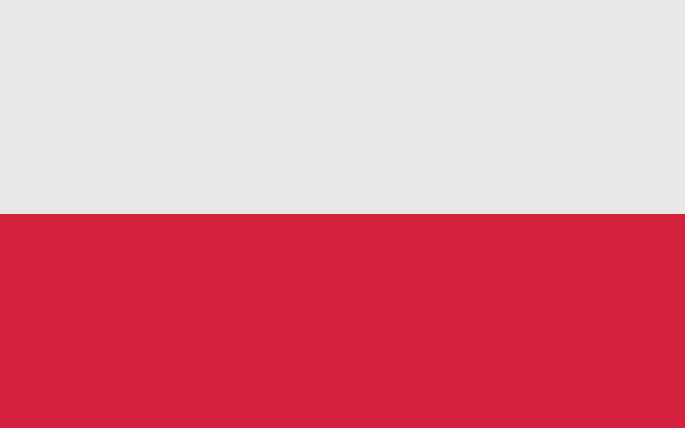
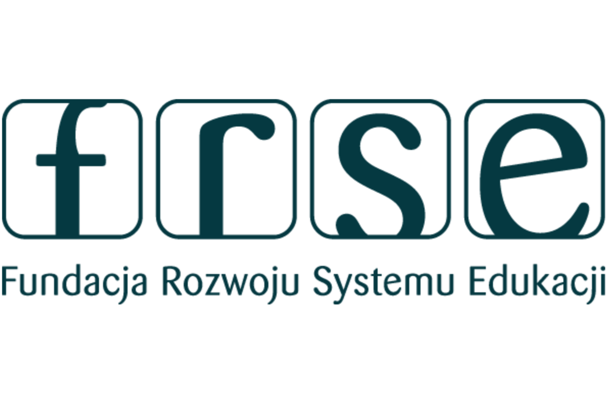

GRECJA 2025 – Praktyki zagraniczne



2 tygodnie pełne smaków, gotowania, greckiej kuchni i niezapomnianych wrażeń!
Przez dwa tygodnie pracowaliśmy w prawdziwych greckich hotelach, A for Athens oraz 360° Athens gdzie poznawaliśmy sekrety greckiej kuchni, uczyliśmy się od mistrzów i chłonęliśmy śródziemnomorską kulturę jedzenia. Oto jak to wyglądało!
Opis z A for athens
-
-
Opis z 360
-
-
GRECJA 2025 – Praktyki zagraniczne